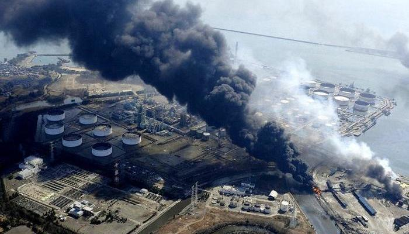

Радиоактивное загрязнение — загрязнение местности и находящихся на ней объектов радиоактивными веществами
Радиоактивные загрязнения происходят при: выпадении радиоактивных веществ из облака ядерного взрыва и наведённой радиации, обусловленной образованием радиоактивных изотопов в окружающей среде под воздействием мгновенного нейтронного и гамма-излучений ядерного взрыва; поражает людей и животных главным образом в результате внешнего гамма- и (в меньшей степени) бета-облучения, а также в результате внутреннего облучения (в основном альфа-активными нуклидами) при попадании радиоизотопов в организм с воздухом, водой и пищей. техногенных авариях (утечках из ядерных реакторов, утечках при перевозке и хранении радиоактивных отходов, случайных утерях промышленных и медицинских радиоисточников и т. д.) в результате рассеяния радиоактивных веществ; характер загрязнения местности зависит от типа аварии.
